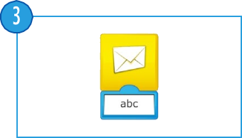
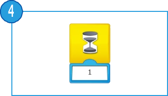
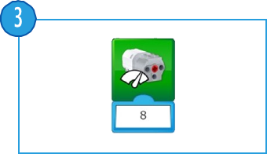
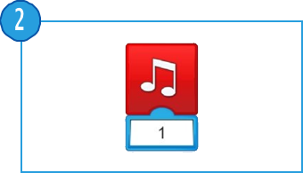
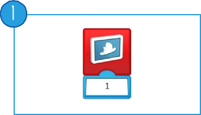
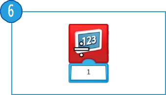
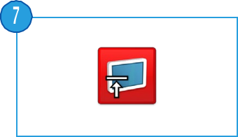
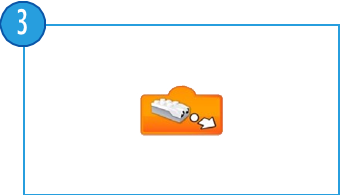
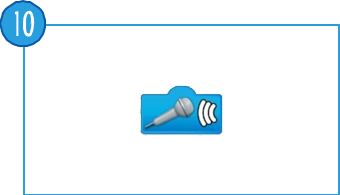

Siempre debe colocarse al principio de la cadena de programa. Pulse sobre él para iniciar la cadena de programa que ha escrito.
Siempre debe colocarse al principio de la cadena de programa. Esperará al mensaje correcto y, entonces, iniciará la cadena de programa que ha escrito.
Envía un mensaje al panel de programación. Se activará cada bloque Iniciar al recibir un mensaje con el mismo mensaje. El mensaje puede constar de textos o números.

Utilice este bloque para decirle al programa que espere a que ocurra algo. Puede esperar un periodo de tiempo determinado o la entrada de un sensor. Este bloque siempre necesita una entrada para que funcione correctamente.

Utilizar este bloque para repetir acciones. Los bloques colocados dentro del bloque Repetir entrarán en bucle. También puede llamarse “bloque bucle”. El bucle puede repetirse para siempre, durante un periodo de tiempo determinado o hasta que ocurra algo.
Siempre debe colocarse al principio de la cadena de programa. Pulse sobre él o en la letra correcta del teclado para iniciar la cadena de programa que ha escrito. Todas las cadenas de programa con la misma letra se iniciarán al mismo tiempo. Para cambiar la letra de activación, mantenga pulsado el bloque para acceder al teclado.
Prepara el motor para girar el eje en el sentido mostrado e inicia el motor. Toque el bloque para cambiar rápidamente la dirección de rotación.
Ajusta el motor para girar el eje en el sentido mostrado e inicia el motor. Toque el bloque para cambiar rápidamente la dirección de rotación.

Ajusta la potencia del motor al nivel especificado e inicia el motor. El nivel puede ajustarse con una entrada numérica de 0 a 10.

Inicia el motor durante un periodo de tiempo especificado en segundos. El periodo de tiempo puede establecerse con una entrada numérica, utilizando números enteros o decimales.
Detiene cualquier movimiento del motor.
Enciende el LED del hub inteligente en un color determinado. El color puede cambiarse con una entrada numérica entre 0 y 10. Para apagar el LED utilizaremos el valor 0.
Reproduce un sonido. El sonido se elige en una lista disponible dentro del software. Puede elegir un sonido mediante una entrada numérica. Elija el número de sonido 0 para reproducir un sonido que haya grabado usted mismo.

Utilice este bloque para mostrar una imagen elegida de una lista disponible dentro del software. Puede establecer la imagen con una entrada numérica.

Utilice este bloque para abrir el área de visualización en la pantalla del software. Aparecerán números o texto en el área de visualización.
Suma una cantidad al número que se muestra actualmente en la pantalla. Introduzca el número que desee sumar. Toque el bloque para cambiar la operación matemática.
Resta una cantidad del número que se muestra actualmente en la pantalla. Introduzca el número que desee restar. Toque el bloque para cambiar la operación matemática.
Multiplica el número mostrado en pantalla por un número especificado. Introduzca el número por el que desee multiplicar. Toque el bloque para cambiar la operación matemática.
Divide el número mostrado en pantalla entre un número especificado. Introduzca el número entre el que desee dividir. Toque el bloque para cambiar la operación matemática.

Utilice este bloque para cerrar el área de visualización en la pantalla del software. Toque el bloque para cambiar el tamaño.

Utilice este bloque para ajustar el área de visualización en pantalla completa. Toque el bloque para cambiar el tamaño.
Utilice este bloque para ajustar el área de visualización en tamaño intermedio. Toque el bloque para cambiar el tamaño.
Introduce el modo del sensor de movimiento “Cualquier cambio de distancia” en un bloque.
Introduce el modo del sensor de movimiento “disminuir la distancia entre el sensor y un objeto” en un bloque.
Introduce el modo del sensor de movimiento “incrementar la distancia entre el sensor y un objeto” en un bloque.

Introduce el modo del sensor de inclinación “Agitar” en un bloque.
Introduce el modo del sensor de inclinación “Inclinación hacia abajo” en un bloque.
Introduce el modo del sensor de inclinación “Inclinación hacia arriba” en un bloque.
Introduce el modo del sensor de inclinación “Inclinación en un sentido” en un bloque.
Introduce el modo del sensor de inclinación “Inclinación en otro sentido” en un bloque.
Introduce el modo del sensor de inclinación “Sin inclinación” (o posición horizontal) en un bloque.
Introduce el modo del sensor de sonido (del dispositivo) “cambiar nivel de sonido” en un bloque.

Introduce el valor numérico generado por el sensor de inclinación (0, 3, 5, 7 o 9) en un bloque.
Introduce el valor detectado por el sensor de movimiento (de 0 a 10) en un bloque.
Introduce el valor detectado por el sensor de sonido (de 0 a 10) en un bloque.
Introduce un valor numérico en un bloque.
Introduce un valor de texto en un bloque.
Introduce un valor numérico mostrado en el área de visualización en un bloque.
Introduce un valor aleatorio en un bloque. El rango de número lo determina el bloque al que se acopla.
Utilice el cuadro de texto para insertar comentarios en un programa. Este no es un bloque de programa.
Volver al índice